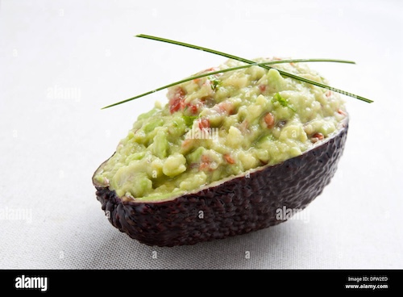

Lazy Guacamole

No mess quick and easy guacamole
This recipe is great for camping or those times when you want to wash the least amount of dishes possible
Ingredients
- 1 avacado
- 1 key lime
- Tajin
Directions
- Cut your avacado in half and remove the pit
- Using a fork, smash both halves of the avacado while still in the hull
- Cut the lime in half
- Squeeze half of a lime into each half of the avacado
- Add Tajin to taste
- Mix with a fork and serve with your favorite tortilla chips
Tips
- Roll the lime between your palm and a hard surface while pressing to help release the juices
- Instead of chips try substituting veggies like carrots and celery